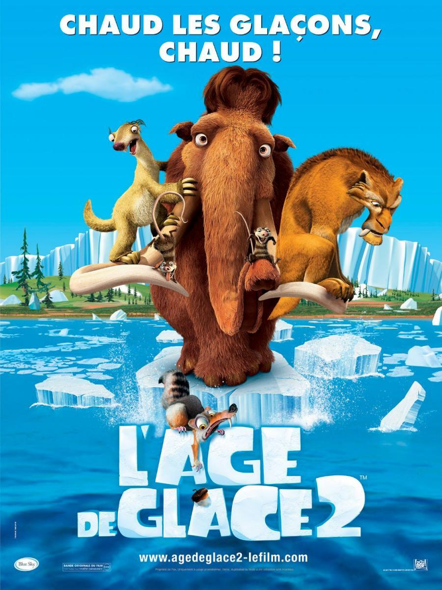

En la escena de apertura, Scrat, la ardilla sube un glaciar, pero abre accidentalmente un agujero en él. El mundo de hielo se está derritiendo. Las criaturas de la Era de Hielo se divierten en la muestra de piscinas realizados por la fusión del hielo, entre los animales están los tres protagonistas de la primera película: Manny, Sid, y Diego. Sid no es tomado en serio por nadie, ni siquiera por Manny y Diego lo que lo obliga a hacer algo peligroso. Tony el rápido, con un artista local llaman la atención de todos sobre la tierra y las inundaciones diciendo que la corteza y las cañas que vende son necesarios para mantenerse vivo de una supuesta inundación inminente.
Manny rechaza la idea, para luego distraerse cuando ve que Sid trata de hacer un clavado de una cascada gigante, Manny va con Diego a la parte superior de la cascada para salvar Sid de su acto, donde a la vez ven que el agradable clima cálido provoca que el hielo del valle se derrita. El hielo se había mantenido como glaciar formando se una presa la cual mantiene a salvo al valle de la destrucción. En un principio Tony mencionaba ese deshielo como propaganda para vender sus productos de supervivencia hasta que es confirmado por Sid, Manny y Diego, las criaturas no les creen pero al ver como el hielo se caía poco a poco y tras la amenaza de un buitre de huir antes de ser comidos por las aves carroñeras los animales inician su viaje, Sid canta tres canciones que se burlan de Manny sobre mamuts ser "extinto".
El buitre les dice que los animales pueden salvarse en una gigantesca corteza de árbol que puede actuar como un barco; la corteza se encuentra sobre un cañón de rocas a la cual se dirigen todos los animales llenos de pánico por el deshielo. Durante el tiempo en que la muchedumbre de los animales escapa, un glaciar que contiene dos reptiles de mar de la era Mesozoica se derrite liberándolos.
Manny tiene el miedo de ser el último mamut vivo, pero se reúne Ellie, una mamut femenina que cree que es una zarigüeya y la hermana de Crash y Eddie, dos zarigüeyas problemáticas. Sid los invita a su grupo para escapar de la inundación, y ella trae sus hermanos. Después de una peligrosa prueba con los dos reptiles asesinos, Sid descubre que Diego tiene miedo de agua. Más tarde Manny y Ellie descubren una zona que Ellie recuerda como el lugar donde fue adoptada. Por último, se da cuenta de que es un mamut, pero se distancia de Manny cuando este le sugiere "seguir con la especie", esta pelea casi los conduce a morir en un cañón rocoso.
Sid es secuestrado por una tribu de mini-perezosos que creen que Sid es el dios del fuego. Sid enciende un fuego para ellos, y cree que ha encontrado el respeto que siempre buscaba en sus amigos, pero la tribu va a sacrificarlo a un volcán porque aseguran que el dios del fuego está provocando que el magma del nucleo de la tierra provoque los continuos deshielos y que para evitar una inundación catastrófica hay que sacrificar al rey del fuego, osea, a Sid. Él logra escapar. A la mañana siguiente Sid les dice su experiencia, pero ni Many, ni Diego, ni Elli ni Crash ni Eddy están convencidos. Postreriormente encuentran un campo de géiseres caliente, que separan a Manfred, Sid, y Diego de Ellie y sus hermanos.
Manny decide ir por el camino de géiseres viéndolo como un camino rápido aunque peligroso y Ellie decide ir alrededor para evitar morir antes de tiempo. Sid intenta convencer a Manny de que morir ahogados es una forma de morir más sutil, pero morir explotando en pedazos es algo sátiro.
Cuando viene el diluvio, Manfred salva a Ellie de ahogarse, ya que estaba atrapada en las rocas, mientras que Diego supera su temor de agua para salvar Sid. Los dos malvados reptiles llegan para comerse a la pandilla pero debido a la rápida capacidad de pensamiento de Manny, son rematados por una piedra que cae sobre ellos aparentemente matándolos a ambos. Los demás animales están a merced de las corrientes de agua pero salvándose en la corteza gigante a excepción de Manny, Diego, Sid, Ellie, Crash y Eddie que quedan acorralados por el agua estando en una roca.
Mientras tanto, Scrat (quien había luchado demasiado por recuperar su bellota) sube hasta el glaciar y formado una línea punteada enterrando y desenterrando su bellota. Con ella forma una grieta en el glaciar, lo que amplía en una fisura, drenando así la inundación y las vidas de los animales. Scrat es arrastrado. En la escena final, una manada de mamuts aparece junto con la tribu de perezosos que ahora si respetaban a Sid después de haberlo intentado matar antes, pero Manny y Ellie deciden permanecer juntos de todos modos, teniendo a Sid, Diego y las zarigüeyas como una manada.
El epílogo muestra Scrat con una experiencia cercana a la muerte después de caer en la fisura. Entra en un cielo lleno de bellotas pero tras intentar Agarrar una bellota enorme es arrancado del cielo y lamentablemente se despierta siendo resucitado por Sid, Scrat lleno de ira lo golpea hasta el final.
|  |
| Productor : Lori Forte |
| Pais : Estados Unidos |
| Idioma: Ingles |
| Fecha de estreno: 31 de marzo de 2006 |
| Presupuesto : 80 mill. de $ |
| Recaudacion: 660,9 mill. de $ |
| Duracion:1h 31m |